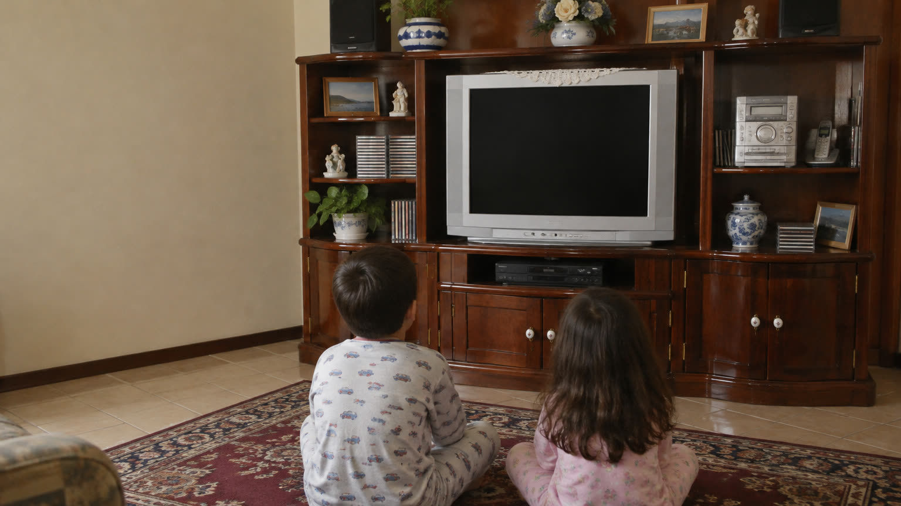
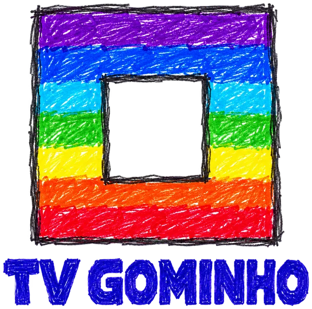

Ligou, está passando
Nada de menu, catálogo ou dez minutos escolhendo. A criança liga a TV e o canal já está no ar, no meio do desenho, como era.

Para quem cresceu nos anos 2000

Liga a TV e o desenho já está passando.
Lembra de acordar, ligar a TV e o desenho já estar passando? Sem escolher episódio, sem fila de próximo vídeo, sem algoritmo. A TV Gominho traz aquela manhã de volta para os seus filhos, com os desenhos que você escolher.
Na TV: Felix (1919 e 1922) e Superman da Fleischer (1941), em domínio público. A sala é uma imagem ilustrativa gerada por IA.
A gente não escolhia o que ia passar. Ligava a TV, pegava o desenho no meio, esperava o intervalo e, quando o bloco acabava, ia brincar. Era mais simples, e sobrava tempo para o resto do dia. A TV Gominho devolve esse ritmo para quem está crescendo agora.
Nada de menu, catálogo ou dez minutos escolhendo. A criança liga a TV e o canal já está no ar, no meio do desenho, como era.
Os desenhos passam no horário da grade. Quando o bloco termina, a TV sai do ar e mostra a que horas volta. Não tem próximo episódio automático.
O canal toca só o que está na pasta: os desenhos que você aprovou. Nenhuma recomendação, nenhum vídeo estranho no meio.
Funciona num pendrive, no Raspberry Pi ou no computador ligado na TV. Não pede login e não envia nada para a internet.
Nada vai para a internet. O app lê a pasta direto do computador, do Raspberry Pi ou do pendrive.
Uma pasta com os seus episódios e vinhetas. Nomes baixados, como DBZ_Episodio 001 ou S01E05, já são entendidos.
biblioteca/
programas/
gato-felix/
programa.yaml
episodios/
001 - Loucuras de Gato.mp4
vinhetas/
aberturas/ intervalos/
comerciais/
tv-gominho grade monta o canal: abertura, desenhos em rodízio, chamadas entre eles e encerramento, no tamanho do bloco.
blocos: - horario: "08:00" itens: - vinheta: aberturas - programa: gato-felix - vinheta: intervalos - comerciais: 3 - programa: superman-fleischer
O canal segue o relógio, como uma TV ao vivo: ligou às 8h10, pega o desenho no meio. No modo Biblioteca, você escolhe o episódio.
# configuracoes.yaml: só o # que muda em relação ao padrão horario: real crt: intensidade: suave curvatura: 30
tv-gominho servir, que já abre com ela.tv-gominho verificar confere se a TV vai tocar.tv-gominho servir --rede e o navegador do celular, da TV ou de outro PC.O tv-gominho faz o que o navegador não faz. É um arquivo só, e usa o ffmpeg.
$ tv-gominho ajuda TV Gominho: ferramentas de linha de comando Comandos: converter Converte vídeos antigos para MP4 organizar Arruma vídeos baixados na biblioteca grade Monta a grade com os programas pendrive Grava a programação em MP4 verificar Confere se uma TV vai tocar servir Abre a TV Gominho no navegador $ tv-gominho grade ./biblioteca --epoca 2004 Lendo a duração de 48 vídeos… pronto.
AVI, MKV e outros formatos antigos viram MP4 que o app toca. Os originais vão para uma pasta à parte; nada é apagado sem você pedir.
Arruma uma pasta de downloads: reconhece o desenho, a vinheta e a emissora pelo nome do arquivo.
Opcional. Usa o Jev, uma IA da TypeSafe; só os nomes dos arquivos saem do computador.Monta a programação no estilo da época, com as vinhetas do ano que você escolher.
Grava os dias da grade em MP4, em partes de menos de 4 GB, para qualquer TV com USB.
Confere um pendrive como o player USB da TV: codecs, níveis, FAT32 e nomes.
Precisa do Node.js 22.9 ou mais novo e, para a biblioteca de exemplo, do ffmpeg. Tudo cabe no pendrive, ao lado dos desenhos: o app tem uns 1 MB e a ferramenta, 245 KB. O código está no GitHub, com licença GPL-3.0.
$ git clone https://github.com/matheusgomes062/tv-gominho.git $ cd tv-gominho $ npm install $ npm run exemplo:real # desenhos em domínio público $ npm run dev # abre em localhost:5173